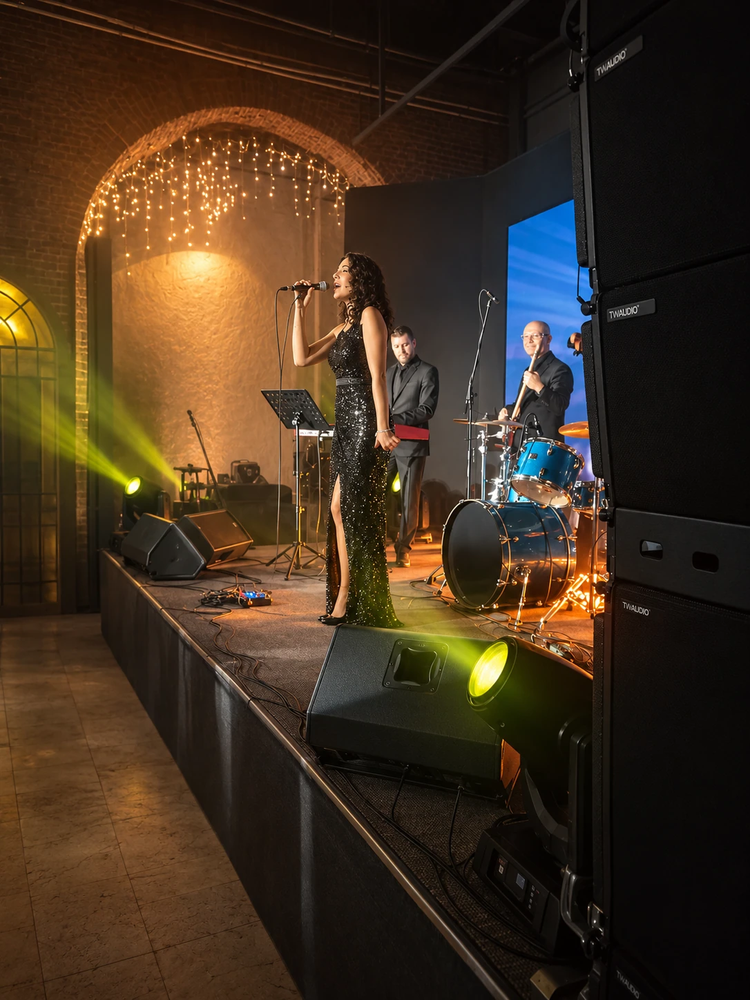
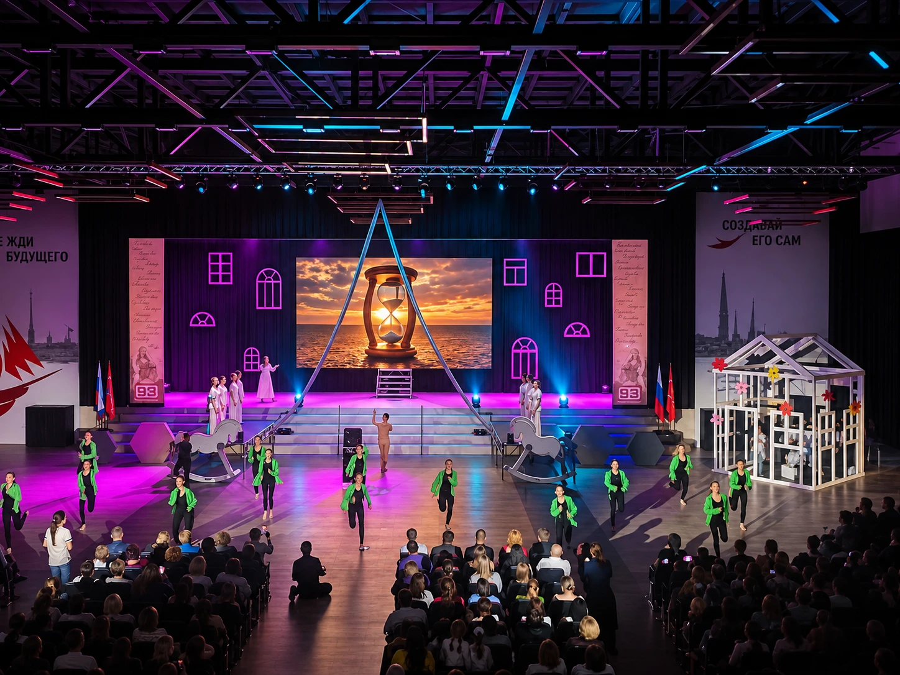

Свет и звук на концерт.
Акустический вечер, выступление кавер-группы или концертная программа. Подбираем техническое решение под музыкантов, сцену и зал.
Начинаем с райдера
Пришлите технический райдер артиста и план сцены. Звукорежиссёр уточнит микрофоны, подключения, мониторинг и бэклайн. Если райдера пока нет, начнём с состава группы и списка инструментов.
Согласуем, какое оборудование предоставляет площадка и что нужно привезти. Для нескольких коллективов заранее обсудим смену инструментов и время между выступлениями.

Свет по ходу музыки
Художник работает за пультом во время выступления: выделяет солиста, меняет настроение сцены и поддерживает музыкальные акценты. Для подготовки полезны сет-лист, записи песен и пожелания артистов.
На камерном концерте подойдут мягкая заливка и несколько акцентов. Для динамичной программы добавляем движущиеся приборы и пиксельный свет. Возможность использовать сценический туман уточняем у площадки.

Подготовка до открытия дверей
В расписании закладываем заезд, монтаж, настройку света и саундчек. Важно знать, когда музыканты смогут выйти на сцену и во сколько зал открывают для зрителей.
Можно заказать свет и звук вместе или пригласить художника для работы на готовом оборудовании. Для выступления под шатром заранее согласуем защиту техники от осадков и условия электропитания.

Что прислать для расчёта
Дату, площадку, примерное число зрителей, состав исполнителей и длительность программы. Приложите райдер, план сцены и список оборудования площадки, если они есть. Стоимость зависит от комплекта, бэклайна, состава технической команды и времени работы.